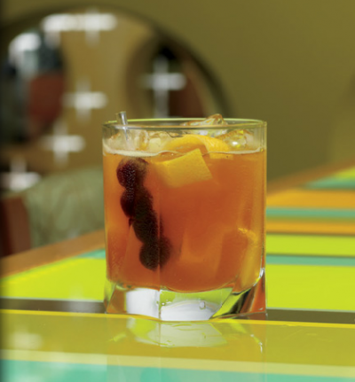

Breakfast drink: bere (responsabilmente) già dal mattino - La Cucina Italiana
 Menu PROVA ICORSI DIGITALI
gratis! Search Ricette News Storie Tutorial Lifestyle Video La Scuola Abbonati La Cucina Italiana Basilicata Calabria Campania Emilia Romagna Friuli-Venezia Giulia Lazio Liguria Lombardia Marche Molise Piemonte Puglia Sardegna Sicilia Toscana Trentino-Alto Adige Umbria Valle d'Aosta Veneto Ricette Antipasti Primi Secondi Contorni Dolci e dessert Salse e sughi Piatti unici Bevande News Cucina Eventi Famiglia e bambini In primo piano Salute e nutrizione Trend Storie Chef Luoghi Piatti tipici Ristoranti Tutorial Gli strumenti I consigli Le tecniche Lifestyle Ambiente e Sostenibilità Benessere Design Tempo libero
Video
La Scuola
Abbonati
PROVA I
CORSI DIGITALI
gratis!
Storie Luoghi
Breakfast drink: bere (responsabilmente) già dal mattino
13 ottobre 2017 di Maurizio Bertera Contributor
Nati Oltreoceano e abituali per gli anglosassoni, i cocktail 'del mattino' stanno diventando sempre più popolari, all'interno dei grandi alberghi. Il amati, il Mimosa e il Bloody Mary, che i migliori bartender declinano in mille versioni. Come al Mio Bar del Park Hyatt Milano.
Bere al mattino. Senza esagerare, è un piccolo grande piacere per iniziare la giornata, possibilmente non lavorativa. Must del mondo anglosassone, i breakfast drink stanno iniziando a uscire dalla ristretta cerchia dei fedeli (soprattutto Americani), concentrata ovviamente nei grandi alberghi dove anche in Italia è normale vedere una bottiglia di Champagne , nel cestello, pronta all’uso per chi vuole una flute mattutina.
Per chi è dietro il bancone, l’importante è fare un corretto servizio al cliente, regalando emozione ma evitando che il tasso alcolico salga a livelli di guardia, già alle dieci del mattno. “Ecco perchè bisogna creare una carta dei cocktail vivace e allettante, cercando di tenere bassa la dose di alcol per chi non si accontenta al mattino di una spremuta di frutta o di un centrifugato” spiega Alessandro Iacobucci Vitoni, bar & lounge manager del Mio Bar che insieme al Vun di Andrea Aprea è uno dei plus del centralissimo Park Hyatt Milano. Qui si può bere molto bene dalle 9 del mattino alle 2 di notte.
Il must: il Bloody Mary
Il Mio Bar è un piccolo paradiso per chi ama il Bloody Mary , solo lo Stravinskij del romano Hotel De Russie può competere per numero in carta e precisione della preparazione. Una dozzina le varianti nelle ‘mani’ dei ragazzi di Iacobucci Vitoni, con una proposta a rotazione di quattro che partono dalla ricetta base (quella codificata IBA prevede 9 cl di succo di pomodoro; 4,5 cl di vodka; 1,5 cl di succo di limone; 2-3 gocce di Worcester Sauce; un pizzico di sale di sedano e pepe nero; un tocco di Tabasco) per arrivare a un cocktail raffinato e intenso al tempo stesso. “Considerando che il Bloody Mary è il signature cocktail ho solo pensato a migliorare ulteriormente la qualità della materia prima, quindi il pomodoro rosso o giallo rigorosamente bio spiega il regista del Mio Bar e trovare pepi come sali diversi per aumentare la personalizzazione. Del resto, a me piace giocare anche per gli altri cocktail utilizzando erbe quali e timo, basilico e rosmarino. Le vodka sono tutte premium”.
Tutte le variazioni del Mimosa
Vediamo i quattro Bloody Mary in carta. Il Seasonal unisce alla ricetta base i capperi di Pantelleria frullati e il cetriolo a fette. Nel Kangtega entra la spuma di sedano, un sale pregiato dell’Himalaya il nome del cocktail è ispirato a una vetta del Nepal e un tocco di peperoncino. Lo zenzero pregiato è protagonista del Ginger Mary mentre sta piacendo molto il Marie dove si utilizza il pomodoro giallo e la Senape di Dijon in grani: sembra un piatto più che un drink ed è il classico esempio di come prima di pranzo si possa bere qualcosa di diverso in abbinamento a cibo salato o persino si possa fare un’allegra colazione con un Bloody Mary. “L’aspetto importante, lo ripeto dice Iacobucci Vitoni è che nella carta dalle 9 alle 12, le dosi di alcol sono inferiori alla media oppure consigliamo le nostre spremute fresche di agrumi con un tocco di Champagne, di Vermouth o di Campari. Per esempio, un bitter Campari con il pompelmo rosa spremuto al momento è perfetto per la mattina. Qualche altro breakfast drink, che può diventare ancora più gradevole al lunch dove a questo punto si può aumentare la dose alcolica? Il Mimosa : Champagne e spremuta di arancia (in parti uguali); il Morning Margarita dove la componente agrumata diventa più importante rispetto alla versione normale dove la Tequila è dominante. il French 75 con Champagne, gin e succo di limone. Tutti da provare, rigorosamente uno a colazione e un paio al brunch.
UN BLOODY MARY PERFETTO (CON UOVA ALLA BENEDICT)
LA VERA STORIA DEL BLOODY MARY
BLOODY MARY: LA RICETTA
CIN CIN! Cocktail Colazione Stampa
Hot Topic
dolci carne uova verdure cioccolatonew!
di Adele Pupella Contributor
Weekend a Ischia: tra mare, terme e arte
Storie
di Danilo Poggio Contributor
I primi 50 anni di Custoza Doc
Storie
di Sara Magro Contributor
Valle d'Aosta: da qui i giovani non scappano
Storie
di Maria Laura Pignata Contributor
Dove andare a mangiare a Napoli, i consigli
Storie
Edizione digitale inclusa
Scopri le offerte!
La cucina italiana
Abruzzo Basilicata Calabria Campania Emilia Romagna Friuli-Venezia Giulia Lazio Liguria Lombardia Marche Molise Piemonte Puglia Sardegna Sicilia Toscana Trentino-Alto Adige Umbria Valle d’Aosta VenetoRicette
Antipasti Primi Secondi Contorni Dolci e dessert Salse e sughi Piatti unici BevandeNews
Cucina Eventi Famiglia e bambini In primo piano Salute e nutrizione TrendStorie
Chef Luoghi Piatti tipici RistorantiTutorial
Gli strumenti I consigli Le tecnicheLifestyle
Ambiente e Sostenibilità Benessere Design Tempo liberoLa Cucina Italiana edition:
Italy USA Pubblicità Abbonamento Redazione Condizioni d’utilizzo Privacy Codice Etico Wired.it Vogue.it GQ.com AD-italia.it Vanityfair.it Impostazioni dei cookie©: Edizioni Condé Nast s.p.a. - Piazza Cadorna 5 - 20123 Milano cap.soc. 2.700.000 euro I.V. C.F E P.IVA reg.imprese trib. Milano n. 00834980153 società con socio unico
In edicola ABBONATI E REGALALA CUCINA ITALIANA! Edizione digitale inclusa PROVA I CORSI DIGITALI - gratis! Impara a cucinare online con La Cucina Italiana PROVA I CORSI DIGITALI - gratis! ESPANDI CHIUDI
Impara a cucinare online con La Cucina Italiana
Inizia subito a cucinare: prova gratis per 14 giorni, disdici quando vuoi.
Accedi a decine di corsi online, senza limiti Segui nuove lezioni ogni settimana Impara da chef professionisti, con spiegazioni pratiche in video e schede step-by-step Divertiti in ogni momento: crea il tuo piano didattico, liberamente da ogni device Edizione digitale inclusa
Abbonamento rivista annuale
(12 numeri) solo € 26,40 45% sconto
Ogni anno oltre 1.000 nuove ricette provate per voi nella cucina di redazione.
Spunti, idee e suggerimenti per divertirsi ai fornelli e preparare piatti di sicuro successo. La Cucina Italiana, recentemente rinnovata nella veste grafica, propone anche rubriche che vanno dalla scuola di cucina all’educazione alimentare dei più piccoli, dal turismo enogastronomico alle nuove tendenze.
I vantaggi sono tantissimi, inclusa la possibilità di leggere la tua rivista su tablet!
Scopri tutti i vantaggi dell'abbonamento
COMODA CONSEGNA A DOMICILIO PREZZO BLOCCATO TUTTO L'ANNO NESSUN NUMERO PERSOL'abbonamento include tutte le edizioni digitali su tablet
Servizio clienti
Ti vuoi abbonare? Sei abbonato ma la copia non ti è arrivata? Hai cambiato indirizzo?
Per queste e altre domande il Servizio Abbonamenti è a tua disposizione:
E-mail : abbonati@condenast.it Telefono : 199 133 199* dal lunedi al venerdi dalle 9.00 alle 18.00. Fax : 199 144 199
Vai al servizio clienti
Vuoi richiedere un arretrato, di un numero in edicola o di uno speciale? Vai al servizio arretrati
* Il costo della chiamata per i telefoni fissi da tutta Italia è di 11,88 centesimi di euro al minuto + iva senza scatto alla risposta. Per le chiamate da cellulare i costi sono legati all'operatore utilizzato.
PROVA I CORSI DIGITALI - gratis!
ABBONATI O REGALA LA CUCINA ITALIANA Scopri tutti i vantaggi